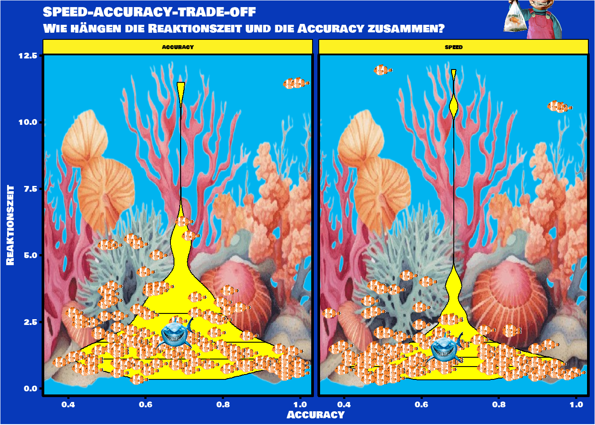
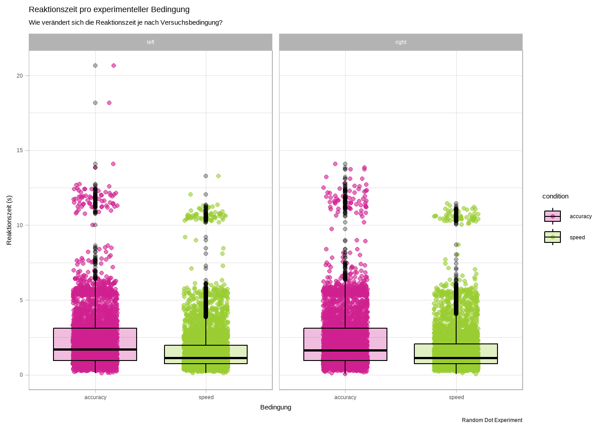
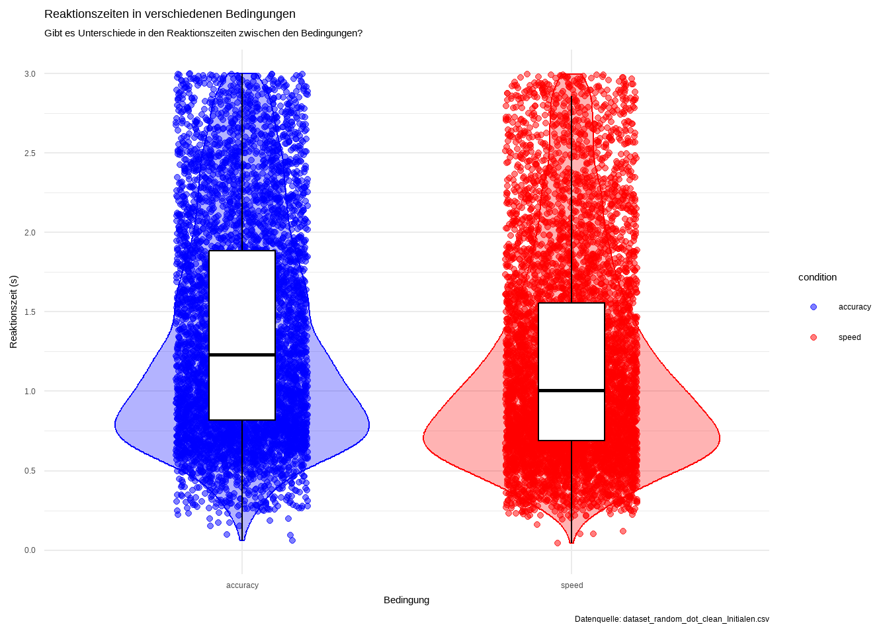
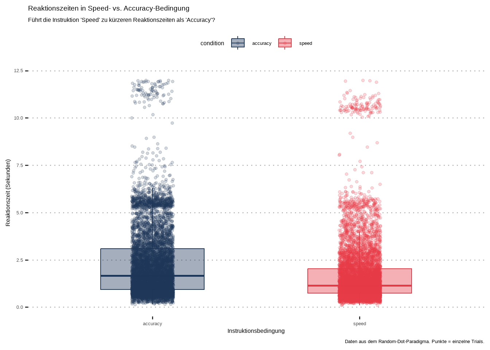
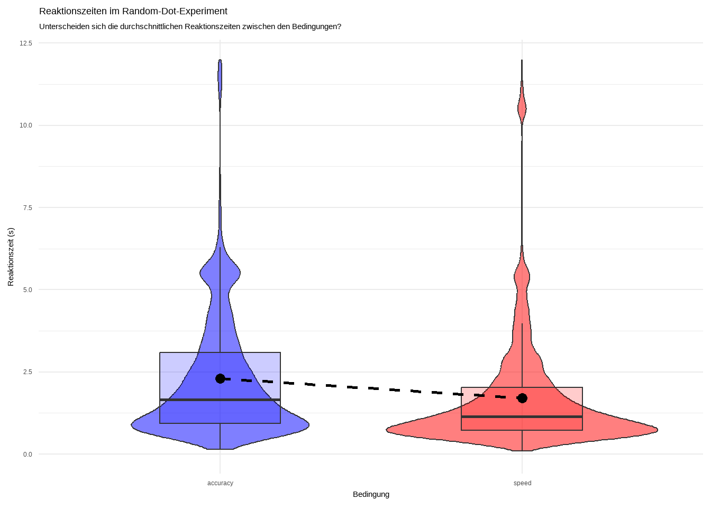
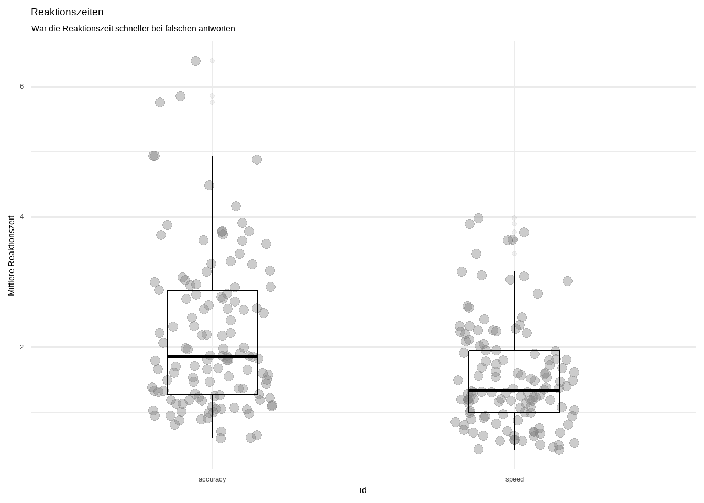
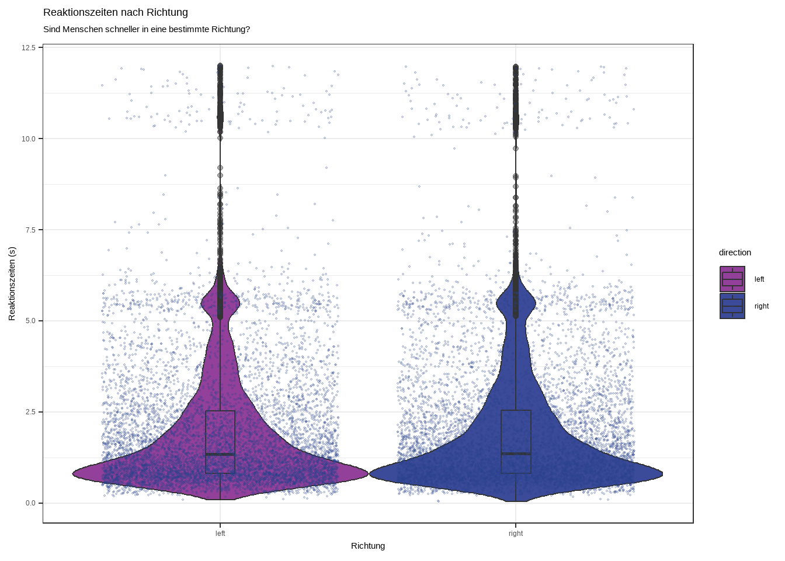
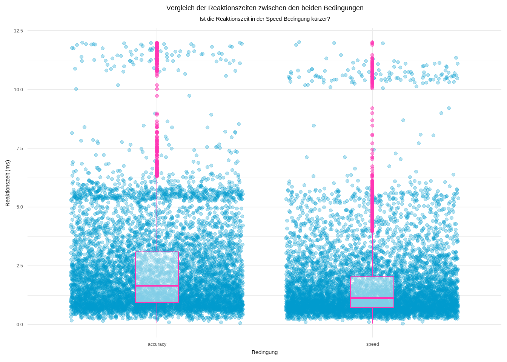
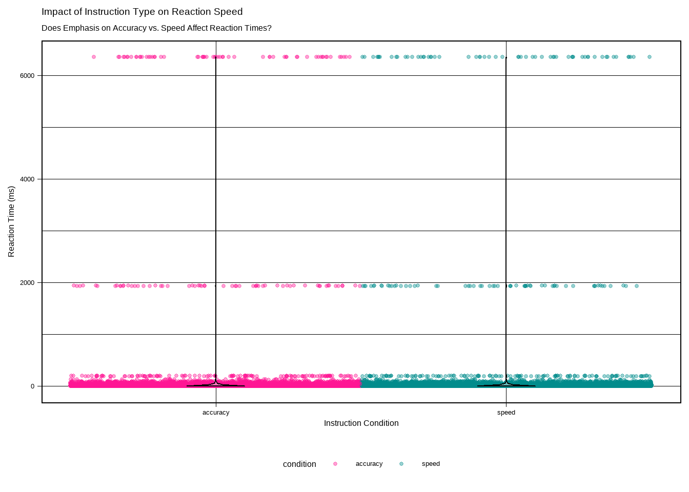

Plot Gallery - Group 2
# Code innerhalb der folgenden 2 Linien darf nicht verändert werden
# ---------------------------------------------------------------------
library(tidyverse)
d = read_csv('data/dataset_random_dot_clean.csv')
# ---------------------------------------------------------------------
# Beginnen Sie hier mit Ihrem Code:
#install.packages("ggimage")
library(ggimage)
library(magick)
library(png)
library(grid)
library(ggplot2)
library(dplyr)
library(patchwork)
library(tibble)
d <- d |>
mutate(
is_accuracy = condition == "accuracy",
is_speed = condition == "speed")
d <- d |>
filter(rt < 10)
d_summary <- d |>
group_by(condition, corr) |>
summarise(avg_rt = mean(rt), .groups = "drop") |>
mutate(image = ifelse(corr == 1, "1.png", "0.png"))
pp = d |>
ggplot(aes(x = condition, y = rt)) +
# Rohwert Datenpunkte
geom_jitter(aes(color = as.factor(corr)),
position = position_jitterdodge(jitter.width = 0.7, dodge.width = 1),
show.legend = FALSE,
alpha = 0.2,
size = 1.5) +
# Violinen mit Mean & SD
geom_violin(aes(fill = as.factor(corr)),
position = position_dodge(width = 1),
draw_quantiles = c(0.25, 0.5, 0.75),
alpha = 0.5,
width = 0.5,
color = alpha("#434255", 0.5))+
geom_image(data = d_summary,
aes(x = condition, y = avg_rt, image = image),
size = 0.05,
position = position_dodge(width = 1)) +
# Beschriftung Skalen
## Violinen
scale_fill_manual(values = c("0" = "#277B74", "1" = "#B8696D"),
labels = c("Falsch", "Richtig"),
name = "") +
## #f98052orange, #8088D3blau
## Jitter
scale_color_manual(values = c("0" = "#277B74", "1" = "#B8696D")) +
# Captions & Themes
labs(title = "Random Dot Task",
subtitle = "Wie unterscheiden sich die Conditions in ihren Reaktionszeiten?",
x = "Condition",
y = "Reaktionszeit [s]") +
theme_linedraw() +
theme(legend.position = "bottom",
plot.title = element_text(hjust = 0.5,
face = "bold",
color = "#277B74",
size = 14),
plot.subtitle = element_text(hjust = 0.5,
size = 11))
# Dummy-Daten für die Bildlegende
legend_images <- tibble(x = 1:2,
y = 1,
label = c("", ""),
image = c("1.png", "0.png"))
# Plot für die Bildlegende
image_legend <- ggplot(legend_images, aes(x = x, y = y)) +
geom_image(aes(image = image),
size = 0.5) +
geom_text(aes(label = label),
vjust = 3,
size = 4) +
xlim(0.0000000001, 3.02) +
ylim(0.5, 1.3) +
ggtitle("Durchschnitt RT") +
theme_void() +
theme(plot.title = element_text(hjust = 0.5, size = 10))
THE_plot <- pp / image_legend + plot_layout(heights = c(4, 1))
THE_plot
# Code innerhalb der folgenden 2 Linien darf nicht verändert werden
# ---------------------------------------------------------------------
library(tidyverse)
d = read_csv('data/dataset_random_dot_clean.csv')
# ---------------------------------------------------------------------
# Beginnen Sie hier mit Ihrem Code:
##Loading packages
library(ggimage)
# install.packages("remotes")
# remotes::install_github("MatthewBJane/ThemePark")
library(ThemePark)
library(magick)
library(png)
library(grid)
#Preparing data for plotting
mean_data <- d |> filter(rt > 0.099 & rt < 12) |>
group_by(id, condition) |>
summarise(
N = n(),
ncorrect = sum(corr),
accuracy = mean(corr),
median_rt = median(rt)) |>
ungroup()
mean_data <- mean_data |>
group_by(condition) |>
mutate(overall_accuracy = mean(accuracy),
overall_rt = mean(median_rt))|>
ungroup()
plot_data <- mean_data |>
mutate(image = "clownfish.png",
image2 = "shark.png")
img = png::readPNG("darla.png") %>%
rasterGrob(interpolate = TRUE)
img_1 <- readPNG("coral.png")
#Creating plot
nemo_plot <- ggplot(data = plot_data,
mapping = aes(x = accuracy, y = median_rt))+
annotation_custom(rasterGrob(img_1,
width = unit(1,"npc"),
height = unit(1,"npc")),
-Inf, Inf, -Inf, Inf) +
geom_violin(draw_quantiles = c(0.25, 0.5, 0.75), color = "black", fill = "yellow") +
geom_image(aes(image=image), size = 0.06) +
facet_wrap(~condition) +
geom_image(aes(image = image2, x = overall_accuracy, y = overall_rt), size = 0.22) +
labs(title = "speed-accuracy-trade-off",
subtitle = "Wie hängen die Reaktionszeit und die Accuracy zusammen?",
x = "Accuracy",
y = "Reaktionszeit") +
coord_cartesian(clip = "off") +
annotation_custom(img, x = 1.2, y = 13, ymax = 15.8, xmax = 2) +
theme_nemo()
nemo_plot# Code innerhalb der folgenden 2 Linien darf nicht verändert werden
# ---------------------------------------------------------------------
library(tidyverse)
d = read_csv('data/dataset_random_dot_clean.csv')Rows: 28680 Columns: 8
── Column specification ────────────────────────────────────────────────────────
Delimiter: ","
chr (5): id, direction, condition, corrAns, resp
dbl (3): trial, corr, rt
ℹ Use `spec()` to retrieve the full column specification for this data.
ℹ Specify the column types or set `show_col_types = FALSE` to quiet this message.# ---------------------------------------------------------------------
# Beginnen Sie hier mit Ihrem Code:
d_filtered <- d %>% filter(rt <= 120)
p = d |>
ggplot(data = d_filtered,
mapping = aes(x = condition, y = rt/10)) +
# Enhanced boxplots with more harmonious colors
geom_boxplot(aes(fill = condition),
alpha = 0.7,
outlier.shape = NA,
width = 0.5,
lwd = 0.8,
fatten = 1.2) +
geom_jitter(aes(color = condition),
width = 0.15,
alpha = 0.5,
size = 0.7) +
stat_summary(fun = mean,
geom = "point",
shape = 23,
size = 4,
color = "black",
fill = "#FFD700") + # More refined gold color for the diamond
# Harmonious color palette: complementary blues and purples
scale_color_manual(values = c("speed" = "#3B7A9E", "accuracy" = "#7A559E")) +
scale_fill_manual(values = c("speed" = "#5F9AB8", "accuracy" = "#9C7CB8")) +
labs(title = "Verteilung der Reaktionszeiten nach Bedingungen",
subtitle = "Unterscheiden sich die Reaktionszeiten zwischen den beiden Bedingungen?",
x = "Instruktionsbedingung",
y = "Reaktionszeit (s)") +
theme_bw() +
theme(
legend.position = "none",
plot.title = element_text(face = "bold", size = 14),
plot.subtitle = element_text(size = 11, color = "grey30"),
axis.title = element_text(face = "bold"),
panel.grid.minor = element_blank(),
panel.grid.major.x = element_blank(),
panel.border = element_rect(color = "grey70", size = 1)
)
p
# Code innerhalb der folgenden 2 Linien darf nicht verändert werden
# ---------------------------------------------------------------------
library(tidyverse)
d = read_csv('data/dataset_random_dot_clean.csv')
# ---------------------------------------------------------------------
# Beginnen Sie hier mit Ihrem Code:
# Reaktionszeiten filtern (realistische Werte zwischen 0.1 und 8 Sekunden)
d <- d |>
filter(rt > 0.1 & rt < 8)
# Plot erstellen
p = d |>
ggplot(aes(x = condition, y = rt, color = condition)) +
geom_jitter(width = 0.2, alpha = 0.4, size = 2) +
geom_boxplot(width = 0.4, alpha = 0, color = "black", outlier.shape = NA) +
stat_summary(fun = mean, geom = "point", shape = 21, size = 3, fill = "gold", color = "black") +
scale_color_manual(values = c("darkred", "darkgreen")) +
labs(
title = "Reaktionszeiten unter Speed- vs. Accuracy-Instruktion",
subtitle = "Beeinflusst die Instruktion die mittlere Reaktionszeit?",
x = "Instruktion",
y = "Reaktionszeit (Sekunden)",
color = "Instruktion"
) +
theme_minimal(base_size = 14)
# Plot anzeigen
p# Code innerhalb der folgenden 2 Linien darf nicht verändert werden
# ---------------------------------------------------------------------
library(tidyverse)
d = read_csv('data/dataset_random_dot_clean.csv')
# ---------------------------------------------------------------------
# Beginnen Sie hier mit Ihrem Code:
library(tidyverse)
d = read_csv('data/dataset_random_dot_clean.csv')
library(ggplot2)
library(dplyr)
library(readr)
d <- read.csv("data/dataset_random_dot_clean.csv") %>%
mutate(resp = as.factor(resp))
p <- d %>%
ggplot(aes(x = resp, y = rt, fill = resp)) +
geom_violin(trim = FALSE, alpha = 0.5, color = NA) + # Verteilung
geom_jitter(aes(color = resp), width = 0.15, alpha = 0.3, size = 1.5) + # Rohdatenpunkte
stat_summary(fun = mean, geom = "point", shape = 21, size = 3.5, fill = "white", color = "black", stroke = 1) + # Mittelwert
stat_summary(fun.data = mean_se, geom = "errorbar", width = 0.1, color = "black") + # Standardfehler
labs(
title = "Reaktionszeiten in Abhängigkeit der Antwort",
subtitle = "Beeinflusst die gegebene Antwort (linke vs. rechte Taste) die Reaktionszeit?",
x = "Antwort (Taste)",
y = "Reaktionszeit (ms)",
color = "Antwort",
fill = "Antwort"
) +
scale_fill_manual(values = c("#9E5E9E", "#39BEBE")) + # Neue Füllfarben
scale_color_manual(values = c("#C28CCC", "#7FDAD7")) + # Neue Punktfarben
theme_minimal(base_size = 12) +
coord_cartesian(ylim = c(0, 0300)) # Ausreißer optisch begrenzen
p
# Code innerhalb der folgenden 2 Linien darf nicht verändert werden
# ---------------------------------------------------------------------
library(tidyverse)
d = read_csv('data/dataset_random_dot_clean.csv')
# ---------------------------------------------------------------------
# Paketen laden
library(dplyr)
library(ggplot2)
# Mittelwerte pro VPN berechnen
d1 <- d %>%
group_by(id) %>%
summarise(mean_corr = mean(corr),
mean_rt = mean(rt)) %>%
filter(mean_rt < 12)
#richtiger Datensatz mit Mittelwerten
d2 <- d %>%
group_by(id) %>%
mutate(mean_corr = mean(corr, na.rm = TRUE),
mean_rt = mean(rt, na.rm = TRUE)) %>%
filter(mean_rt < 12)
#Plots
p <- ggplot(d2, aes(x = condition, y = rt, color = condition)) + #Struktur der grafische Darstellung
geom_jitter(width = 0.2, alpha = 0.6, size = 1.5) + #Rohdaten
geom_boxplot(aes(fill = condition), alpha = 0.3, color = "black") + #zusammenfassendes Mass
scale_color_manual(values = c("violetred", "olivedrab3")) + #Farben für Rohdaten
scale_fill_manual(values = c("violetred", "olivedrab3")) + #Farben für zusammenfassendes Mass
labs( title = "Reaktionszeit pro experimenteller Bedingung", #Beschriftungen
subtitle = "Wie verändert sich die Reaktionszeit je nach Versuchsbedingung?",
x = "Bedingung",
y = "Reaktionszeit (s)",
caption = "Random Dot Experiment") +
theme_light() + #Theme
facet_wrap(~ direction) #Optional: Facets
p
# Code innerhalb der folgenden 2 Linien darf nicht verändert werden
# ---------------------------------------------------------------------
library(tidyverse)
d = read_csv("data/dataset_random_dot_clean.csv")
# ---------------------------------------------------------------------
# Beginnen Sie hier mit Ihrem Code:
d_clean <- d |>
filter(rt < 3)
d$rt = d$rt / 1000
p = d_clean |>
ggplot(aes(x = condition, y = rt, color = condition)) +
geom_jitter(alpha = 0.5, width = 0.2) +
geom_violin(alpha = 0.3, aes(fill = condition), show.legend = FALSE) +
geom_boxplot(width = 0.2, outlier.shape = NA, color = "black") +
labs(
title = "Reaktionszeiten in verschiedenen Bedingungen",
subtitle = "Gibt es Unterschiede in den Reaktionszeiten zwischen den Bedingungen?",
x = "Bedingung",
y = "Reaktionszeit (s)",
caption = "Datenquelle: dataset_random_dot_clean_Initialen.csv"
) +
theme_minimal() +
scale_color_manual(values = c("blue", "red", "green")) +
scale_fill_manual(values = c("blue", "red", "green")) +
scale_y_continuous(breaks = seq(0, 3, by = 0.5), limits = c(0, 3))
p
print(p)# Code innerhalb der folgenden 2 Linien darf nicht verändert werden
# ---------------------------------------------------------------------
library(tidyverse)
d = read_csv('data/dataset_random_dot_clean.csv')
# ---------------------------------------------------------------------
# Beginnen Sie hier mit Ihrem Code:
library(tidyverse)
d = read_csv('data/dataset_random_dot_clean.csv')
p <- d |>
ggplot(aes(x = condition, y = rt, color = condition)) +
geom_jitter(alpha = 0.3, width = 0.2) +
stat_summary(fun = mean, geom = "point", shape = 18, size = 4, color = "black") +
stat_summary(fun.data = mean_se, geom = "errorbar", width = 0.15, color = "black") +
labs(
title = "Reaktionszeiten in Abhängigkeit der Instruktion",
subtitle = "Beeinflusst die Aufgabeninstruktion (Schnelligkeit vs. Genauigkeit) die Reaktionszeit?",
x = "Instruktion",
y = "Reaktionszeit (s)",
color = "Instruktion"
) +
theme_minimal() +
ylim(0.1, 12)
p[1] 51.2217# Code innerhalb der folgenden 2 Linien darf nicht verändert werden
# ---------------------------------------------------------------------
library(tidyverse)
d = read_csv('data/dataset_random_dot_clean.csv')
# ---------------------------------------------------------------------
# Beginnen Sie hier mit Ihrem Code:
#mittelwert reaktionszeit
mean_rt <- mean(d$rt, na.rm = TRUE)
mean_rt
#ausreisser filtern
# zu schnelle und zu langsame Antworten ausschliessen
d <- d |>
filter(rt > 0.099 & rt < 10)
#code für GGPLOT
p = d |>
ggplot(aes(x = condition, y = rt, color = condition)) +
geom_jitter(width = 0.2, alpha = 0.4, size = 2) +
geom_boxplot(width= 0.4, alpha= 0, color="black") +
scale_color_manual(values = c("darkorange", "steelblue")) +
labs(
title = "Reaktionszeiten unter Speed- vs. Accuracy-Instruktion",
subtitle = "Beeinflusst die Instruktion die Reaktionszeit?",
x = "Instruktion",
y = "Reaktionszeit (Sekunden)",
color = "Instruktion") +
theme_minimal(base_size = 14)
p
# Code innerhalb der folgenden 2 Linien darf nicht verändert werden
# ---------------------------------------------------------------------
library(tidyverse)
d = read_csv('data/dataset_random_dot_clean.csv')
# ---------------------------------------------------------------------
# Beginnen Sie hier mit Ihrem Code:
library("ggpubr")
p = d |>
filter(rt > 0.099 & rt < 12) |>
ggplot(d,
mapping = aes(x = condition, y = rt, color = condition, fill = condition)) +
geom_jitter(width = 0.1, alpha = 0.2, size = 1.2) +
geom_boxplot (alpha = 0.4, width = 0.5, outlier.shape = NA) +
labs(
title = "Reaktionszeiten in Speed- vs. Accuracy-Bedingung",
subtitle = "Führt die Instruktion 'Speed' zu kürzeren Reaktionszeiten als 'Accuracy'?",
x = "Instruktionsbedingung",
y = "Reaktionszeit (Sekunden)",
caption = "Daten aus dem Random-Dot-Paradigma. Punkte = einzelne Trials."
) +
scale_color_manual(values = c("speed" = "#E63946", "accuracy" = "#1D3557")) +
scale_fill_manual(values = c("speed" = "#E63946", "accuracy" = "#1D3557")) +
theme_pubclean()
p# Code innerhalb der folgenden 2 Linien darf nicht verändert werden
# ---------------------------------------------------------------------
library(tidyverse)
d = read_csv('data/dataset_random_dot_clean.csv')
# ---------------------------------------------------------------------
# Beginnen Sie hier mit Ihrem Code:
##Bei Unklarheiten wurde für diese Abgabe zur Unterstützung Chatgpt verwendet.
means <- d |>
group_by(condition, trial) |>
summarise(mean_acc = mean(corr),sd_acc = sd(corr),
.groups = "drop"
)
# Schritt 2: Plot bauen (Rohdaten + Mittelwertlinie)
p <- ggplot(d, aes(x = trial, y = corr, color = condition)) +
geom_jitter(width = 0.05, height = 0.05, alpha = 0.05, size = 0.05) + # Rohdaten
geom_ribbon(data = means, aes(x = trial, ymin = mean_acc - sd_acc, ymax = mean_acc + sd_acc, fill = condition),
alpha = 0.2, color = NA, inherit.aes = FALSE) +
geom_line(data = means, aes(x = trial, y = mean_acc, color = condition), linewidth = 0.05) + # Mittelwert
geom_point(data = means, aes(x = trial, y = mean_acc, color = condition), size = 0.5) +
scale_color_manual(values = c("darkorange", "royalblue")) +
scale_fill_manual(values = c("darkorange", "royalblue")) +
labs(
title = "Genauigkeitsverlauf im Dot-Experiment",
subtitle = "Wie verändert sich die Genauigkeit
über die Durchgänge hinweg?",
x = "Durchgang (Trial)",
y = "Antwort korrekt (0 = falsch, 1 = richtig)",
caption = "Datenquelle: dataset_random_dot_clean.csv"
) +
facet_wrap(~ condition) +
theme_minimal(base_size = 12)
# Plot anzeigen
p# Code innerhalb der folgenden 2 Linien darf nicht verändert werden
# ---------------------------------------------------------------------
library(tidyverse)
d = read_csv('data/dataset_random_dot_clean.csv')
# ---------------------------------------------------------------------
# Beginnen Sie hier mit Ihrem Code:
dfilt <- d |>
filter(rt > 0.099 & rt < 10)
p = dfilt |>
ggplot(aes(x= condition, y= rt, color = condition)) +
geom_jitter(size = 3, alpha = 0.4,
width = 0.2, height = 0) +
geom_violin(alpha = 0, width = 1, color = "black") +
scale_color_manual(values = c(accuracy = "skyblue3",
speed = "tomato3")) +
labs(x = "Bedingung",
y = "Reaktionszeit [s]",
title = "Reaktionszeiten (RZn)",
subtitle = "Unterscheiden sich die RZn der beiden Bedingungen?") +
theme_minimal() +
theme(legend.position = "none")
p# Code innerhalb der folgenden 2 Linien darf nicht verändert werden
# ---------------------------------------------------------------------
library(tidyverse)
d = read_csv('data/dataset_random_dot_clean.csv')
# ---------------------------------------------------------------------
# Beginnen Sie hier mit Ihrem Code:
p = d |>
ggplot(mapping = aes(x = condition,
y = rt )) +
geom_jitter(width = 0.3, alpha = 0.6, color = "green") +
geom_violin(width = 0.3, alpha = 0.5, color = "blue") +
labs(title = "Eine schöne Zusammenfassung",
subtitle = "Wie verhält sich die Reaktionszeit zur Bedingung",
x = "Bedingung",
y = "Reaktionszeit") +
theme_dark()
p
# Code innerhalb der folgenden 2 Linien darf nicht verändert werden
# ---------------------------------------------------------------------
library(tidyverse)
d = read_csv('data/dataset_random_dot_clean.csv')
# ---------------------------------------------------------------------
# Beginnen Sie hier mit Ihrem Code:
mean_values <- d |>
filter(!is.na(rt), rt > 0.1, rt < 12) |>
group_by(condition) |>
summarise(mean_rt = mean(rt))
mean_values$condition <- factor(mean_values$condition, levels = c("accuracy", "speed"))
p = d |>
filter(!is.na(rt), rt > 0.1, rt < 12) |>
ggplot(aes(y = rt, x = condition, fill = condition)) +
geom_violin(alpha = 0.5) +
geom_boxplot(alpha = 0.2, width = 0.4, outlier.shape = NA,) +
geom_point(data = mean_values, aes(x = condition, y = mean_rt),
size = 3) +
geom_line(data = mean_values, aes(x = as.numeric(condition), y = mean_rt, group = 1),
size = 1, linetype = "dashed") +
labs(title = "Reaktionszeiten im Random-Dot-Experiment",
subtitle = "Unterscheiden sich die durchschnittlichen Reaktionszeiten zwischen den Bedingungen?",
x = "Bedingung",
y = "Reaktionszeit (s)",
color = "Bedingung") +
scale_fill_manual(values = c("blue", "red")) +
scale_color_manual(values = c("blue", "red")) +
theme_minimal() +
coord_cartesian(ylim = c(0, 12)) +
theme(legend.position = "none")
p
# Code innerhalb der folgenden 2 Linien darf nicht verändert werden
# ---------------------------------------------------------------------
library(tidyverse)
d <- read_csv('data/dataset_random_dot_clean.csv')
# ---------------------------------------------------------------------
# Beginnen Sie hier mit Ihrem Code:
#Frage: is the accuracy of direction sig. lower in the speed condition?
d <- d %>%
filter(rt >= 100, rt <= 12000)
library(ggplot2)
library(dplyr)
# Beispiel: Gruppiere nach Bedingung
df_summary <- d %>%
group_by(condition) %>%
summarise(
mean_speed = mean(rt),
sd_speed = sd(rt)
)
ggplot(d, aes(x = condition, y = rt, color = condition)) +
# Rohdaten
geom_jitter(width = 0.2, alpha = 0.3) +
# Mittelwert + SD
stat_summary(fun = mean, geom = "point", size = 3, color = "red") +
stat_summary(fun.data = mean_sdl, fun.args = list(mult = 1),
geom = "errorbar", width = 0.2, color = "red") +
# Farben & Theme
scale_color_brewer(palette = "Set2") +
theme_minimal() +
# Beschriftungen
labs(
title = "Reaktionszeiten pro Bedingung",
subtitle = "Unterscheiden sich die Reaktionszeiten je nach Bedingung?",
x = "Bedingung",
y = "Reaktionszeit (ms)",
color = "Bedingung",
caption = "Rohdaten + Mittelwerte mit Standardabweichung"
)
# A tibble: 252 × 5
# Groups: id [126]
id condition trial ncorrect mean_rt
<chr> <chr> <int> <dbl> <dbl>
1 sub-007 accuracy 60 41 1.23
2 sub-007 speed 60 40 0.942
3 sub-010 accuracy 60 60 1.01
4 sub-010 speed 60 60 0.636
5 sub-011 accuracy 60 55 1.28
6 sub-011 speed 60 54 0.535
7 sub-012 accuracy 60 58 0.611
8 sub-012 speed 60 59 0.650
9 sub-014 accuracy 60 43 2.60
10 sub-014 speed 59 22 3.01
# ℹ 242 more rows# Code innerhalb der folgenden 2 Linien darf nicht verändert werden
# ---------------------------------------------------------------------
library(tidyverse)
d = read_csv('data/dataset_random_dot_clean.csv')
# ---------------------------------------------------------------------
# Beginnen Sie hier mit Ihrem Code:
p <- d |>
filter(rt > 0.099 & rt < 8)
p <- p|>
group_by(id, condition) |>
summarise(
trial = n(),
ncorrect = sum(corr),
mean_rt = mean(rt)
)
p <- ggplot(aes(x = condition, y = mean_rt, color = condition))+
geom_jitter(size = 3, alpha = 0.4,
width = 0.2, height = 0) +
geom_boxplot(width = 0.3, alpha = 0.05, color = "black") +
scale_color_manual(values = c(congruent = "skyblue3",
incongruent = "tomato3")) +
labs(x = "id",
y = "Mittlere Reaktionszeit",
title = "Reaktionszeiten",
subtitle = "War die Reaktionszeit schneller bei falschen antworten") +
theme_minimal(base_size = 12) +
theme(legend.position = "none")
p# Code innerhalb der folgenden 2 Linien darf nicht verändert werden
# ---------------------------------------------------------------------
library(tidyverse)
d = read_csv('data/dataset_random_dot_clean.csv')
# ---------------------------------------------------------------------
# Beginnen Sie hier mit Ihrem Code:
d_filter <- d %>%
filter(rt <= 120)
sp = d |>
ggplot(data = d_filter, mapping = aes(x = condition, y =rt)) +
geom_violin(alpha = 0.9, fill = "skyblue", trim = TRUE) +
geom_jitter(width = 0.2, alpha = 0.2, size = 0.2) +
stat_summary(fun = "mean", geom = "point", shape = 23, size = 3, color = "blue", fill = "violet") +
labs(title = "Übung 3",
subtitle = "Verteilung der Reaktionszeit nach Bedingung",
x = "Bedingung",
y = "Reaktionszeit") +
theme_minimal()
sp# Code innerhalb der folgenden 2 Linien darf nicht verändert werden
# ---------------------------------------------------------------------
library(tidyverse)
d = read_csv('data/dataset_random_dot_clean.csv')
# ---------------------------------------------------------------------
# Beginnen Sie hier mit Ihrem Code:
#install.packages("ggpubr")
#library(ggpubr)
summary_d <- d |>
group_by(condition,id) |>
summarise(mean_acc= mean(corr))
#t.test(mean_acc ~ condition, data = summary_d, paired = TRUE)
p= summary_d |>
ggplot(mapping = aes(x = condition,y = mean_acc, fill= condition)) +
geom_boxplot(alpha = 0.5, outlier.shape = NA, width = 0.4) +
geom_jitter(width = 0.01, size = 0.4, alpha = 0.3) +
stat_summary(fun = mean, geom = "crossbar", color = "darkred", size = 0.5)+
labs(
title = "Random-Dot Paradigma",
subtitle = "Gab es signifikant mehr richtige Antworten in der \nAccuracy-Bedingung als in der Speed-Bedingung? ",
x = "Bedingung",
y = "Korrekte Antworten"
) +
scale_fill_manual(values = c("speed" = "steelblue", "accuracy" = "tomato"))+
theme_minimal() +
stat_compare_means(
comparisons = list(c("speed", "accuracy")),
method = "t.test",
paired = TRUE,
label = "p.signif",
label.y = 0.7
)
p# Code innerhalb der folgenden 2 Linien darf nicht verändert werden
# ---------------------------------------------------------------------
library(tidyverse)
d = read_csv('data/dataset_random_dot_clean.csv')
# ---------------------------------------------------------------------
# Beginnen Sie hier mit Ihrem Code:
d <- d |>
filter(rt > 0.1 & rt < 12)
p1 = d |>
group_by(condition) |>
summarise(accuracy = mean(corr, na.rm = TRUE)) |>
ggplot(aes(x = condition, y = accuracy, fill = condition)) +
geom_col() +
labs(title = "Trefferquote pro Bedingung",
subtitle = "Wie hoch ist die durchschnittliche Trefferquote pro Bedingung?",
x = "Bedingung", y = "Trefferquote") +
theme_minimal() +
scale_fill_manual(values = c("#FF5733", "#3498DB")) # Orange & Blau
## 2. Reaktionszeit pro Bedingung
p2 = d |>
ggplot(aes(x = condition, y = rt, fill = condition)) +
geom_boxplot(alpha = 0.5) +
geom_jitter(width = 0.2, aes(color = condition), alpha = 0.5) +
labs(title = "Reaktionszeit pro Bedingung",
subtitle = "Wie unterscheiden sich die Reaktionszeiten pro Bedingung?",
x = "Bedingung", y = "Reaktionszeit (s)") +
theme_minimal() +
scale_fill_manual(values = c("#FF5733", "#3498DB")) +
scale_color_manual(values = c("#FF5733", "#3498DB"))
#Reaktionszeit über Trials
p3 = d |>
ggplot(aes(x = trial, y = rt, group = id, color = condition)) +
geom_line(alpha = 0.5) +
geom_point(alpha = 0.5) +
labs(title = "Reaktionszeit über Trials",
subtitle = "Verändert sich die Reaktionszeit im Verlauf des Experiments?",
x = "Trial", y = "Reaktionszeit (s)") +
theme_minimal() +
scale_color_manual(values = c("#FF5733", "#3498DB"))
# Plots kombinieren mit patchwork
library(patchwork)
p = p1 / p2 / p3
# Endgültigen Plot anzeigen
print(p)
# Code innerhalb der folgenden 2 Linien darf nicht verändert werden
# ---------------------------------------------------------------------
library(tidyverse)
d = read_csv('data/dataset_random_dot_clean.csv')
# ---------------------------------------------------------------------
# Beginnen Sie hier mit Ihrem Code:
# Metbrewer hat colour palettes, die von berühmten Kunstwerken inspiriert sind,
# Und ich finde sie sehr hübsch :)
#install.packages("MetBrewer")
library(MetBrewer)
# violin plot, Ausreisser in der Reaktionszeit werden herausgefiltert
p = d |>
filter(rt<12) |>
ggplot(aes(x = direction, y = rt, fill = direction)) +
geom_violin(width = 1) +
geom_boxplot(width=0.1, alpha=0.4) +
geom_jitter(color="royalblue4", size=0.4, alpha=0.2) +
labs(title = "Reaktionszeiten nach Richtung",
subtitle = "Sind Menschen schneller in eine bestimmte Richtung?",
x = "Richtung",
y = "Reaktionszeiten (s)") +
theme_bw() +
# Klimt ist eine der Farbpaletten, und direction gibt an, welche Farben gewählt werden
scale_fill_manual(values=met.brewer("Klimt", direction = -1))
p# Code innerhalb der folgenden 2 Linien darf nicht verändert werden
# ---------------------------------------------------------------------
library(tidyverse)
d = read_csv('data/dataset_random_dot_clean.csv')
# ---------------------------------------------------------------------
# Beginnen Sie hier mit Ihrem Code:
d_filter <- d %>%
filter(rt <= 120)
sp = d |>
ggplot(data = d_filter, mapping = aes(x = condition, y =rt)) +
geom_violin(alpha = 0.9, fill = "skyblue", trim = TRUE) +
geom_jitter(width = 0.2, alpha = 0.2, size = 0.2) +
stat_summary(fun = "mean", geom = "point", shape = 23, size = 3, color = "blue", fill = "violet") +
labs(title = "Übung 3",
subtitle = "Verteilung der Reaktionszeit nach Bedingung",
x = "Bedingung",
y = "Reaktionszeit") +
theme_minimal()
sp
# Code innerhalb der folgenden 2 Linien darf nicht verändert werden
# ---------------------------------------------------------------------
library(tidyverse)
d = read_csv('data/dataset_random_dot_clean.csv')
# ---------------------------------------------------------------------
# Ein Plot erstellen für die Fragestellung: Ist die Reaktionszeit in der Speed-Bedingung kürzer?
d <- d %>% filter(rt <=12)|> # nur Reaktionszeiten unter 12ms
ggplot(data = d,
mapping = aes(x = condition,
y = rt)) +
geom_jitter(width = 0.4, color= "#009ACD", alpha = 0.3) +
geom_boxplot(width = 0.2, color= "#FF34B3", alpha = 0.5) + # Boxplot-Farbe und transparenz, Boxplot als 2. Aufgelistet, dass es über den blauen Rohdatenpunkten erscheint und transparent, dass Rohdaten sichtbar bleiben.
labs(title = "Vergleich der Reaktionszeiten zwischen den beiden Bedingungen",
subtitle = "Ist die Reaktionszeit in der Speed-Bedingung kürzer?",
x = "Bedingung",
y = "Reaktionszeit (ms)") +
theme_minimal() +
theme(plot.title = element_text(hjust = 0.5), # Den Titel und Subtitel mittig ausrichten
plot.subtitle = element_text(hjust = 0.5))
# Zahlen zum Boxplot: hier können die Werte vom Mean und der SD ausgegeben werden
unique(d$condition)
# Mean und AD für die Bedingung speed berechnen
d_speed <- d %>%
filter(condition == "speed")
d_speed_summary <- d_speed %>%
summarise(mean_rt = mean(rt),
sd_value = sd(rt))
glimpse(d_speed_summary)
# Mean und SD für die Bedingung accuracy berechenen
d_accuracy <- d %>%
filter(condition == "accuracy")
d_accuracy_summary <- d_accuracy %>%
summarise(mean_rt = mean(rt),
sd_value = sd(rt))
glimpse(d_accuracy_summary)
# Code innerhalb der folgenden 2 Linien darf nicht verändert werden
# ---------------------------------------------------------------------
library(tidyverse)
d = read_csv('data/dataset_random_dot_clean.csv')
# ---------------------------------------------------------------------
# Beginnen Sie hier mit Ihrem Code:
p = d |>
ggplot(aes(x = condition, y = rt, color = condition)) + #Rohdaten nach Bed. gruppiert
geom_jitter(alpha = 0.4, width = 0.5, size = 1) +
geom_violin(alpha = 0.4, width = 0.2, color = "black") + #Zusammenfassendes Mass
scale_color_manual(values = c(accuracy = "deeppink",
speed = "darkcyan")) +
labs(
x = "Instruction Condition",
y = "Reaction Time (ms)",
title = "Impact of Instruction Type on Reaction Speed",
subtitle = "Does Emphasis on Accuracy vs. Speed Affect Reaction Times?") +
theme_linedraw(base_size = 12) +
theme(legend.position = "bottom")
p# Code innerhalb der folgenden 2 Linien darf nicht verändert werden
# ---------------------------------------------------------------------
library(tidyverse)
d = read_csv('data/dataset_random_dot_clean.csv')
# ---------------------------------------------------------------------
# Beginnen Sie hier mit Ihrem Code:
preplot <- d |>
group_by(condition) %>%
summarise(
Reaktionszeit = mean(rt, na.rm = TRUE),
sd_rt = sd(rt, na.rm = TRUE)
)
p = ggplot(d, aes(x = condition, y = rt, fill = condition)) +
geom_jitter(width = 0.2, alpha = 0.2, color = "gray70") + # Rohdaten
geom_boxplot(alpha = 0.4, outlier.shape = NA, color = "gray10") + # Boxplot ohne Ausreißer
geom_point(data = preplot, aes(x = condition, y = Reaktionszeit),
shape = 18, size = 4, color = "darkblue", inherit.aes = FALSE) + # Mittelwert,
scale_fill_manual(values = c("speed" = "#E69F00", "accuracy" = "#56B4E9")) +
labs(
title = "Reaktionszeiten im Random dot Experiment",
subtitle = "Unterscheidet sich die Reaktionszeit je nach Instruktion (Speed vs. Accuracy)?",
x = "Instruktionsbedingung",
y = "Reaktionszeit (in ms)",
caption = "Die Quadrate bezeichnen den Mittelwert in der jeweiligen Bedingung"
) +
ylim(0,70) +
theme_minimal()
p